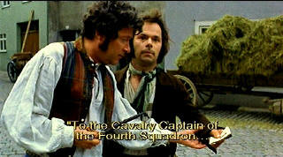

|
Enigma of Kaspar Hauser (SE)/ B+,D+ |
|
Anchor Bay/1974/109/ANA 1.85 |
Writer/director Werner Herzog never fails to
deliver interesting material The fascinating Enigma of Kaspar Hauser
Kaspar is one of his strangest. Herzog moves it along with an
awkward episodic gait similar to the stiff walk of title character Hauser. I
am not always certain as to who the characters are, but the focus is on
Hauser and his journey from a dirty, brutalized youth chained to a stake to
a man trying to understand the world around him and fit in in some way is
never less than moving.
The Enigma of Kaspar Hauser is based on
the true story of a young man who suddenly appeared in the Nuremberg town
square in the 16th century, virtually unable to communicate, barely able to
walk. As the details of his story came clear, it was discovered that he was
kept a prisoner in a dungeon from the moment he could remember, had no
contact with any humans, and was physically immobilized.
The continuity of the film is not quite clear to me. At
times it appears that Kaspar is in some sort of prison, at other times he
seems to be staying with a family, but there's confusion about time period.
In the end, it appears that Kaspar lives in a group
home for unfortunates. I don't understand why things happen the way they do,
but, after all, the film is called The Enigma of Kaspar Hauser. The strong
emphasis is on enigma.
|
 |
| Kaspar is
discovered in the town square. ©Anchor Bay |
Herzog has a compulsive style of filmmaking. He
very patiently leaves no stone
unturned while maintaining the mystery. This is very much Herzog's enigma; a very
strange film. Herzog shows a keen intelligence and curiosity about the human
condition. He spices the script with some interesting details of 16th century
peasant behavior. The small circus scene is wonderfully evocative of another time and
place. The barker weaves his spiel with a slightly disreputable taste which
is very effective. The story of the King of Punt is most poetic.
Quite an incredible performance by Bruno S. as Kaspar.
Kaspar's honesty strips life naked and this comes through with the totally
spastic and awkward performance.
Despite severe reservations on the transfer, The Enigma of Kaspar Hauser
is certainly worth watching. It's a riveting film almost like any other I
have seen. The transfer is heavily grain-laden. There's some
jitter in from time to time. Color is decent, but somewhat desaturated.
Sharpness is reasonable. Optional English subtitles are on the image are
easy to read. Contrast range is rather weak and shadow detail is okay. Some
scenes are blown out like the circus act tent. This is probably the weakest
of the Herzog film transfers. Is it owing to the source material? Perhaps to
some degree, but it appears to me a better transfer could have been
extracted. The scene on the lake is absolutely awful. The interactive grain
and shifting image destroy the mood.
A featured second audio commentary has Norman Hill
asking questions of Werner Herzog in continuity with the film. Herzog
relates the horrible story of his lead actor Bruno S. His story is almost as
horrible as Kaspar's. Hill asks
good questions drawing out fascinating information from Herzog. You learn
about Herzog's shooting style. Herzog's recollections seem as fresh as the
day he shot the footage. The circus scene was written by Herzog ten minutes
before it was shot: incredible! Excellent informative commentary track.
Reviewed on a Sharp 9000VX DLP Projector
|
|
|
|
Werner Herzog Film
![[ Werner Herzog ]](../images/werner-herzog.jpg)
The Web site of director Werner Herzog includes lots of great material. A
perfect stop for anyone who admires his films.
Looking
for a good Foreign Film Fix? Here's a list of reviews that can get you started
on an overdose. Click here to satisfy the urge.

To
Kill a Mockingbird (SE)/ A,A

From the great novel by Harper Lee, this tale of growing up in the 1930s South is splendidly evocative of place and period.
Gregory Peck is splendid. Direction impeccable.

A new Films on Disc space dedicated to purging accumulated home theater
angst and other movie related frustrations, with a measure of praise to
balance the vitriol. The first column takes on:
Inserts and the Pop-Up Window


 Have you visited
Home Theater Talk
lately? One of the friendliest places on the Net for Home Theater and DVD
discussion, you can get help for installation problems or simply share your
opinions with other Vidiots. Have you visited
Home Theater Talk
lately? One of the friendliest places on the Net for Home Theater and DVD
discussion, you can get help for installation problems or simply share your
opinions with other Vidiots.

ISF Monitor
Calibrations in the Tristate New York area. Lots of hardware info
and frequent hardware peaks from video expert Kevin Miller. They may be
judgmental, but that's the point, isn't it. Lots of DVD reviews plus news
and more.
|